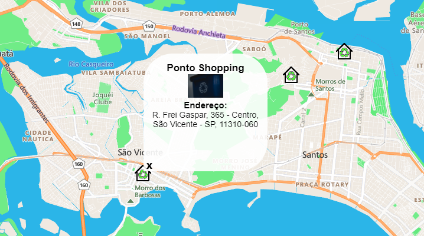

Crie uma conta

Faça seu cadastro como usuario para poder se manifestar com suas denúncias de descartes irregulares!, Ou faça com empresa para divulgar seu nome e pontos de coleta de reciclável.
Nosso serviço de mapa foi desenvolvido no intuito de facilitar a busca por pontos de coleta e gerar denuncias de discarte ilegal de lixo.

Faça seu cadastro como usuario para poder se manifestar com suas denúncias de descartes irregulares!, Ou faça com empresa para divulgar seu nome e pontos de coleta de reciclável.
Recyclo é um projeto desenvolvido por estudantes de Análise & Desenvolvimento de Sistemas da Unibr. Criado no intuito de facilitar a busca de pontos de coleta e denuncias de discarte ilegal de lixo.